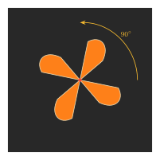
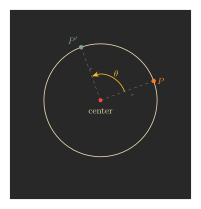

Physical systems tend to obey conservation laws. A conservation law is just an assertion that, in some physical system, some quantity never changes, no matter how the system evolves.
Last week, we introduced Lagrange's formalism of mechanics. Secretly, our purpose for doing so was to explain how Emmy Noether beautifully used it to prove that symmetries of a physical system cause conservation laws.
But, before going to Noether's theorem, let's see some examples of conservation laws, and what they're good for.
Imagine you have a ball of mass \(m.\) You are standing on top of a building, and drop your ball from a height \(H\) above the ground. Let's ignore wind resistance, so that the only force acting on this ball is gravity, and try to see how your ball falls to the ground over time.
Say at time \(t\), your ball has height \(h(t).\) So at time \(t=0\) (the moment of the drop), we have \(h(0) = H.\)
How much energy does the ball have at time \(t\)? Recall that the total energy is the sum of potential energy and kinetic energy. As we discussed last time, the potential energy coming from gravity is \[P(t) = mgh(t),\] where \(g \approx 10 \frac{\text{m}}{\text{s}^2}\) is the acceleration due to gravity on Earth (we hope you're on Earth -- if not, use your planet's gravitational constant).
The kinetic energy depends on the velocity; specifically, \[K(t) = \frac{1}{2}mv(t)^2.\] Luckily, gravity acts with constant acceleration \(g,\) so your ball's velocity at time \(t\) will be \(-gt\) (the negative sign is because the ball is falling down). Thus it has kinetic energy \[K(t) = \frac{1}{2} m(gt)^2.\]
Thus the total energy at time \(t\) is \[E(t) = P(t) + K(t) = mgh(t) + \frac{1}{2}mg^2t^2.\]
However, we can compute \(h(t)\) exactly: because \(h'(t) = v(t),\) and we know \(v(t) = -gt,\) we have \[h(t) = H - \frac{1}{2}gt^2\] by some basic calculus, recalling that \(h(0) = H\) was the height of the building we dropped the ball from.
Thus \[E(t) = mgH - \frac{1}{2}mg^2t^2 + \frac{1}{2}mg^2t^2 = mgH.\] In particular, the energy is independent of time!
This is a standard example of a conservation law: the energy does not change no matter how much time passes, so we say that the energy \(E(t)\) is a conserved quantity.
In the last example, we used Newton's laws to solve for the total energy at time \(t,\) and then observed it never changes. This is a cute observation, but what good does it have?
The true value in conservation laws is often going backwards: start with a system which you know obeys a conservation law, and then use that conservation law to find how the system evolves without needing to apply Newton's laws from scratch.
Later in the article, we will discuss how to know a system obeys a conservation law; in this example, we're going to assume some conservation laws hold, and use them to solve for how our system evolves.
Imagine you are playing billiards. There is a billiard ball of mass \(m_1\) resting on the table. You hit the cue ball (say of mass \(m_2\)) in the direction of that billiard ball, and they collide; let's say that, just before the collision, the cue ball has velocity \(v_2.\) What happens to the balls?
Let's say that, after the collisions, the billiard ball has velocity \(v_1'\) and the cue ball has velocity \(v_2'.\) How do we compute \(v_1'\) and \(v_2'\)?
Let's say our table is frictionless. Then all of the energy in our balls is kinetic, and so a moment before collision, the 2-ball system has total energy \[E = \frac{1}{2}m_2v_2^2 + \frac{1}{2}m_1 \cdot 0 = \frac{1}{2}m_2v_2^2.\]
Let's assume that, like in the previous system, energy is conserved. Then, the energy \[E' = \frac{1}{2}m_2(v_2')^2 + \frac{1}{2}m_1(v_1')^2\] after the collision has to be the same as the energy before; so \[\frac{1}{2}m_2v_2^2 = \frac{1}{2}m_2(v_2')^2 + \frac{1}{2}m_1(v_1')^2.\]
Unfortunately, we have a problem: in the equation above, we have two unknowns: \(v_1'\) and \(v_2'.\) With only one equation, you cannot solve for two unknowns, so at the moment conservation of energy is not so helpful!
However, this system also obeys a second conservation law: conservation of momentum. Before the collision, the momentum is \(m_1\cdot 0 + m_2 \cdot v_2 = m_2v_2,\) and so \[m_2v_2 = m_1v_1' + m_2v_2'.\]
We now have a second equation in our two unknowns; with two equations and two variables, we can solve to find \(v_1'\) and \(v_2'.\) Thus, without needing to do any of the calculus that is usually required in Newtonian mechanics, we can figure out what happens to our billiard balls!
Related to momentum, there is a third conservation law we want to mention: conservation of angular momentum. Let's start by reviewing what angular momentum is.
Fix a point \(O,\) called the "center of rotation." If a particle is rotating around \(O,\) then its angular momentum is defined as the product \[L = mvr,\] where \(r\) is the distance from \(O\) to your particle, \(m\) is the mass of the particle, and \(v\) is the velocity of the particle.
For example, say there is a particle of mass \(m\) rotating in a circle of radius \(r(t)\) around a fixed center point, with frequency \(f(t)\) -- for example if \(f = 3 \text{Hz},\) the particle travels around the circle three times per second. The reason we write \(r(t)\) and \(f(t)\) is because the particle's distance from the center, and its speed, might be changing over time.
A frequency of \(f(t)\) implies the particle has velocity \(v(t) = 2\pi f(t)r(t).\) This is because \(2\pi r(t)\) is the cirumference of the circle and \(f(t)\) is the number of laps the particle makes per second, so that the total distance the particle travels per second is \(2\pi f(t)r(t).\)
Thus the momentum of our particle is \(2\pi mf(t)r(t),\) and so the angular momentum will be \[L(t) = 2\pi mf(t)r(t)^2.\]
As we shall see below, it turns out that angular momentum is conserved in many physical systems. What does that tell us here?
Let's imagine the particle is slowly moving closer to the center point. This means that, say, \[r(1\, \text{sec}) \lt r(0\,\text{sec}),\] because after a second passes, the particle is closer to the center than it was at the start.
Because angular momentum is conserved, we know \[L(1\, \text{sec}) = L(0\, \text{sec}),\] so that \[2\pi mf(1)r(1)^2 = 2\pi mf(0)r(0)^2.\] Dividing by \(2\pi m,\) we find that \[f(1) \cdot r(1)^2 = f(0) \cdot r(0)^2.\]
Because \(r(1) \lt r(0),\) we find that \[f(1) = f(0) \cdot \left(\frac{r(0)}{r(1)}\right)^2 > f(0).\]
In other words, if your particle moves closer to the center of rotation, then its frequency must increase! This is the reason why when figure skaters pull in their arms, they rotate more frequently -- pulling in their arms makes their center of mass closer to the center of their rotation, and hence forces the frequency to increase.
Each of our conserved quantities (energy, momentum, and angular momentum) tells us something useful about our physical system. However, finding these quantities requires some cleverness on our part. Wouldn't it be wonderful if there is a more systematic method for finding conserved quantities? Emmy Noether discovered that conserved quantities exactly correspond to continuous symmetries of the physical system, thereby answering this question!
Noeher's theorem tells us that every continuous symmetry of a physical system causes a conservation law. But what is a continuous symmetry?
A windmill, as shown below, has some symmetry.

For example, rotating the picture by \(90^\circ\) doesn't change the picture. Neither does rotation by \(180^\circ\) or \(270^\circ\). Of course rotating by \(0^\circ\), which does nothing, also doesn't change the shape! However, if you rotate by, say, \(30^\circ\), the blades will be at a different position. So we would say the windmill has 4 symmetries: rotation by \(0^\circ\), \(90^\circ\), \(180^\circ\), and \(270^\circ\).On the other hand, consider a circle.

Then, rotating by any angle \(\theta\) doesn't change the shape. That means the circle has infinitely many symmetries! That's why we would say a circle has a continuous set of symmetries, while the windmill only has a discrete set of symmetries.Our world has (at least!) three types of continuous symmertries:
| symmetries | conserved quantities |
| time | energy |
| translation | momentum |
| rotation | angular momentum |
Let's explore how continuous symmetries really correspond to conserved quantities. We will start with conservation of energy.
Last week, we discussed Lagrange's approach to mechanics. Let's understand why energy is conserved from this perspective.
As a quick review, in Lagrange's approach, we start with a function called the Lagrangian \(L(\vec x,\vec v,t)=K-P\) (kinetic minus potential), and try to minimize the action integral \[ S=\int_{t_0}^{t_1}L\big(\vec x(t),\vec v(t),t\big)dt. \] Minimizing this integral amounts to solving the Euler-Lagrange equation \[ \frac{\partial L}{\partial \vec x}=\frac d{dt}\frac{\partial L}{\partial \vec v}. \] We want to find a conserved quantity. This is some function \(C\) which remains constant as our system evolves. Mathematically, this just means we want to find a function \(C\) such that \[ \frac{dC}{dt}=0. \]
Noether tells us that for convervation of energy, we need the Lagrangian to be independent of time; in other words, that our physical system obeys the "same laws" at every instance. There are two main reasons why this assupmtion may fail in general:
But let's assume that our Lagrangian is time-independent. How did Noether find a conserved quantity?
Our time-indepndence assumption is the same as saying \[\frac{\partial L}{\partial t} = 0.\] What does that tell us about our action integral?
In our action integral \(S,\) we're integrating the function \[\phi(t) = L(\vec{x}(t), \vec{v}(t), t).\]
Applying a multivariable version of the chain rule from calculus, we can compute the time derivative of \(\phi\) to be \[ \frac{d\phi}{dt}=\frac{\partial L}{\partial\vec x}\cdot\frac{d\vec x}{dt}+\frac{\partial L}{\partial\vec v}\cdot\frac{d\vec v}{dt}+\frac{\partial L}{\partial t}. \] Under our assumption that \(L\) is time-independent the last term vanishes, so that we have just \[ \frac{d\phi}{dt}=\frac{\partial L}{\partial\vec x}\cdot\frac{d\vec x}{dt}+\frac{\partial L}{\partial\vec v}\cdot\frac{d\vec v}{dt}. \]
Applying the Euler-Lagrange equation, and remembering that \[\vec {v}(t) = \frac{d\vec x(t)}{dt},\] we find \[ \frac{d\phi}{dt} = \frac{\partial L}{\partial\vec x}\cdot\frac{d\vec x}{dt}+\frac{\partial L}{\partial v}\cdot\frac{d\vec v}{dt} =\frac d{dt}\bigg(\frac{\partial L}{\partial \vec v}\bigg)\cdot\vec v+\frac{\partial L}{\partial\vec v}\cdot\frac{d\vec v}{dt}. \] Using the product rule, we can re-write this expression as \[ \frac d{dt}\bigg(\frac{\partial L}{\partial \vec v}\bigg)\cdot\vec v+\frac{\partial L}{\partial\vec v}\cdot\frac{d}{dt}\vec v=\frac d{dt}\bigg(\frac{\partial L}{\partial\vec v}\cdot\vec v\bigg), \] and so \[ \frac{d\phi}{dt}=\frac d{dt}\bigg(\frac{\partial L}{\partial\vec v}\cdot\vec v\bigg). \]
What good is that formula? Well, if \(\phi = L(\vec{x}(t), \vec{v}(t), t)\) and \(\frac{\partial L}{\partial \vec{v}}\cdot \vec{v}\) have the same time derivative, then their difference \[E = \frac{\partial L}{\partial \vec{v}} \cdot \vec{v} - L\] is a quantity whose time derivative is zero!
Thus, assuming our Lagrangian is time independent gives us a conserved quantity, which is named energy.
Let's see what the conservation of energy means when our Lagrangian is of the form \[ L(\vec x,\vec v)=\frac12m\|\vec v\|^2-V(\vec x), \] where \(V(\vec x)\) is the potential energy of the particle \(\vec x\). As we computed last week, by the product rule \[ \frac{\partial L}{\partial \vec v}=\frac\partial{\partial\vec v}\bigg(\frac12m\|\vec v\|^2\bigg)=m\vec v. \] Thus the energy becomes \[ E=\frac{\partial L}{\partial\vec v}\cdot\vec v-L=m\vec v\cdot\vec v-L=\frac12m\|\vec v\|^2+V(\vec x). \] That is, energy is the sum of kinetic energy and potential energy, like usual!
By the way, what would happen if the Lagrangian \(L\) depended on the time \(t\)? In this scenario, we have to use the full expansion \[ \frac{d\phi}{dt}=\frac{\partial L}{\partial\vec x}\cdot\frac{d\vec x}{dt}+\frac{\partial L}{\partial\vec v}\cdot\frac{d\vec v}{dt}+\frac{\partial L}{\partial t}. \] The extra term \(\frac{\partial L}{\partial t}\), which measures "how much the physical laws of our system depends on time", will tag along through our entire derivation. So we would only be able to conclude that \[ \frac{dE}{dt}=-\frac{\partial L}{\partial t}. \] In other words, the conservation of energy (\(\frac{dE}{dt}=0\)) is equivalent to the time-independence of the Lagrangian (\(\frac{\partial L}{\partial t}=0\))! For example, when there is friction, our Lagrangian is of the form \(L=e^{ct}L'\) where \(L'\) is time-independent. In this case, \[ \frac{dE}{dt}=-\frac{\partial}{\partial t}\big(e^{ct}L'\big)=-ce^{ct}L'=-cL. \] This means energy is lost through friction, which perfectly matches our physical understanding--in the billiard ball example, for instance, our balls are actually going to slow down over time, as they slowly lose energy due to friction with the table.
In the last section, we assumed that the Lagrangian is time-independent, and we analyzed what happens when we change time infinitesimally.
Now, let's assume the Lagrangian \(L\) is translation-invariant, and analyze what happens under an infinitesimal change in position instead.
Before that, note that although above we only treated the Lagrangian for one particle, we could have just as easily treated the Lagrangian with \(n\) particles. In that case, we have a function \(L(\vec x_1,\dots,\vec x_n,\vec v_1,\dots,\vec v_n,t)\) depending on the position and velocities of \(n\) particles and time. The Euler-Lagrange equations becomes \(n\) equations \[ \frac{\partial L}{\partial \vec x_1}=\frac d{dt}\frac{\partial L}{\partial \vec v_1} \] \[ \frac{\partial L}{\partial \vec x_2}=\frac d{dt}\frac{\partial L}{\partial \vec v_2} \] \[ \cdots \] \[ \frac{\partial L}{\partial \vec x_n}=\frac d{dt}\frac{\partial L}{\partial \vec v_n}. \]
Now, let's shift our entire physical system by some small vector \(\vec\epsilon\). Then the Lagrangian changes as \[ L(\vec x_1+\vec\epsilon,\dots,\vec x_n+\vec\epsilon,\vec v_1,\dots,\vec v_n,t)=L+\frac{\partial L}{\partial \vec x_1}\cdot\vec\epsilon+\cdots+\frac{\partial L}{\partial \vec x_n}\cdot\vec\epsilon. \] In other words, the total change is \[ \bigg(\frac{\partial L}{\partial \vec x_1}+\cdots+\frac{\partial L}{\partial\vec x_n}\bigg)\cdot\vec\epsilon. \] In order for the Lagrangian to be independent of all translations, we need \[ \frac{\partial L}{\partial \vec x_1}+\cdots+\frac{\partial L}{\partial\vec x_n}=0. \] By the Euler-Lagrange equation, this means \[ \frac d{dt}\frac{\partial L}{\partial\vec v_1}+\cdots+\frac d{dt}\frac{\partial L}{\partial\vec v_n}=0. \] In other words, the function \[ C=\frac{\partial L}{\partial\vec v_1}+\cdots+\frac{\partial L}{\partial\vec v_n} \] satisfies \[ \frac{dC}{dt}=0,\] i.e., is a conserved quantity. Each derivative \(\frac{\partial L}{\partial \vec v_i}\) is called the momentum of the \(i^{\text{th}}\) particle, and so this just tells us that the total momentum is conserved!
Let's again go back to the situation where the \(i\)-th particle has mass \(m_i\), and the Lagrangian has the form \[ L=\frac12m_1\|\vec v_1\|^2+\cdots+\frac12m_n\|\vec v_n\|^2-V(\vec x_1,\dots,\vec x_n) \] where \(V(\vec x_1,\dots,\vec x_n)\) is the total potential energy of the particles. Then the momentum of the \(i\)-th particle is \[ \frac{\partial L}{\partial\vec v_i}=m_i\vec v_i, \] so the conservation of momentum says \[ m_1\vec v_1+\cdots+m_n\vec v_n \] is conserved. In other words, its time-derivative is zero: \[ m_1\vec a_1+\cdots+m_n\vec a_n=0.\] Newton tells us \(\vec F_i=m_i\vec a_i\) is the force the \(i\)-th particle exerts. So the conservation of momentum just says \[ \vec F_1+\cdots+\vec F_n=0. \] This is exactly Newton's third law: every action has an equal and opposite reaction, and so the net force on any system is zero!
Sophus Lie took this idea of continuous symmetries and developed the theory of Lie groups. Lie groups are analogous to Galois's theory of symmetries that he developed in the course of studying solutions to equations, but encorporates what it means for two symmetries to be "close to each other." He then formalized how to perform calculus on Lie groups--how do you take derivatives of a function on a Lie group? This is precisely what we were doing when we took a derivative with respect to a matrix \(A\) in the derivation of angular momentum.
Sophus Lie's theory of continuous symmetries has since then developed into a rich subject now known as representation theory. Some questions are: What are all possible Lie groups (=sets of continuous symmetries)? In what dimensions can they be realized? What do they look like geometrically--we saw the example of a circle, but what about in higher dimensions?
For more advanced readers, we give here a sampling of Lie groups, by comparison with some simple finite groups.
In our windmill example above, we explained how, while in a first course on group theory you might encounter finite cyclic groups like \(C_4\) or \(C_n\) which govern the rotational symmetries of objects like windmills, the circle has an infinite, continuous group of symmetries: in fact, the circle \(S^1\) itself is the Lie group of rotational symmetries of a circle; we can think of a circle as a group via the group law asserting that \[\text{rotation by \(\theta\)} \times \text{rotation by \(\phi\)} = \text{rotation by \(\theta+\phi\)}.\]
In a finite group theory course, you may also encounter the dihedral groups. The dihedral group \(D_n\) is the group of all symmetries -- rotations and reflections -- of a regular \(n\)-sided polygon. The dihedral group is obtained by starting with the cyclic group \(C_n\) of rotational symmetries, and taking a semidirect product with the group \(\{1, -1\}\) to account for the reflectional symmetries.
Similarly, the group of (origin-preserving) isometries of the plane can be found by taking a semidirect product of \(S^1\) and \(\{1, -1\},\) to account for reflections; concretely, we call this group \(O(2)\) (the \(O\) stands for 'orthogonal,' for reasons we won't go into), and it can be viewed as the group of all \(2\times 2\) matrices \(A\) such that \[A^{\intercal}A = \begin{pmatrix} 1 & 0 \\ 0 & 1\end{pmatrix}.\]
We say that \(O(2)\) has a faithful 2-dimensional representation, because we can realize it as a subgroup of the group of \(2\times 2\) matrices. Matrix groups are the easiest sorts of Lie groups to understand -- our computers can quickly calculate products in matrix groups, for instance -- and the desire for faithful representations of Lie groups is one (of many!) reasons mathematicians study representation theory.
However, we live in a 3-dimensional world. Our rotations are thus more complicated; they are governed not by the Lie group \(S^1,\) but instead by the Lie group \(\operatorname{SO}(3)\) (the letters stand for 'special orthogonal,' but you can ignore what that means if you don't already know). As before, to get the full group of (origin-preserving) isometries of 3-dimensional space, we take a semidirect product with the group \(\{1, -1\}.\)
This leads to the group \(O(3),\) which can be represented as the Lie group of \(3\times 3\) matrices \(M\) obeying \[M^{\intercal}M = \begin{pmatrix} 1 & 0 & 0 \\ 0 & 1 & 0 \\ 0 & 0 & 1\end{pmatrix}\]
In our derivation of conservation of angular momentum, we were a bit hand-wavy and mentioned "differentiation by \(A\)", for \(A\) a \(3\times 3\) rotation matrix. We can now be a little more precise on this point.
Assume our Lagrangian is rotation invariant, so that \[L(A\cdot \vec{x}_1, ..., A \cdot \vec{x}_n, A \cdot \vec{v}_1, ..., A \cdot \vec{v}_n, t) = L(\vec{x}_1, ..., \vec{x}_n, \vec{v}_1, ..., \vec{v}_n, t)\] for all \(A \in O(3).\)
Differentiation is all about making small perturbations to our input. If we want to exploit this invariance to get an identity involving derivatives, we therefore want to think about matrix very close to the identity which belong to \(O(3).\) A matrix close to the identity matrix \[I = \begin{pmatrix} 1 & 0 & 0 \\ 0 & 1 & 0 \\ 0 & 0 & 1\end{pmatrix}\] looks like \(A = I + \epsilon M,\) where \(M\) is some arbitrary matrix and \(\epsilon\) is small. To say that \(A\) is orthogonal is to say that \[AA^{\intercal} = I,\] or in other words that \[(I+\epsilon M)(I+\epsilon M^{\intercal}) = I.\] Expanding this out, we find that it is equivalent to demand \[\epsilon(M + M^{\intercal}) + \epsilon^2MM^{\intercal} = 0.\] As \(\epsilon\) is so small, the \(\epsilon^2\) term is negligible, and so we simplify this to just \[M + M^{\intercal} = 0.\]
Ths equations defines the so-called Lie algebra of the Lie group \(O(3).\) If \(M\) belongs to the Lie algebra of \(O(3),\) then plugging in \(A = 1+\epsilon M\) into our rotational symmetry equation, and letting \(\epsilon\) go to 0, we get the differential equation \[\sum_{i=1}^n \left(\frac{\partial L}{\partial \vec{x_i}} \cdot M\vec{x}_i + \frac{\partial L}{\partial \vec{v}_i} \cdot M\vec{v}_i\right) = 0.\]
Applying the Euler-Lagrange equation to rewrite \(\partial L/\partial\vec{x}_i\) as a time derivative, we deduce \[\frac{d}{dt}\left(\sum_{i=1}^n \frac{\partial L}{\partial\vec{v}_i} \cdot M\vec{x}_i\right) = 0.\] Thus every \(M\) in the Lie algebra for \(O(3)\) gives us a conserved quatnity! We can package these conserved quantities together in a convenient way: it turns out that every \(3\times 3\) matrix obeying \(M + M^{\intercal} = 0\) is of the form \[M\vec{x} = \vec{\omega} \times \vec{x},\] where \(\times\) is the cross product and \(\vec{\omega}\) is some vector depending on \(M.\) As \[\vec{a} \cdot (\vec{\omega} \times \vec{x}) = -\vec{\omega} \cdot (\vec{a} \times \vec{x}),\] our conservation law above becomes \[-\frac{d}{dt}\left(\vec{\omega} \cdot \left(\sum_{i=1}^n \frac{\partial L}{\partial\vec{v}_i} \times \vec{x}_i\right)\right) = 0.\] Because this holds for every choice of \(\vec{\omega},\) we find that \[\sum_{i=1}^n \frac{\partial L}{\partial\vec{v}_i} \times \vec{x}_i\] is a conserved quantity; this conserved quantity is the angular momentum.